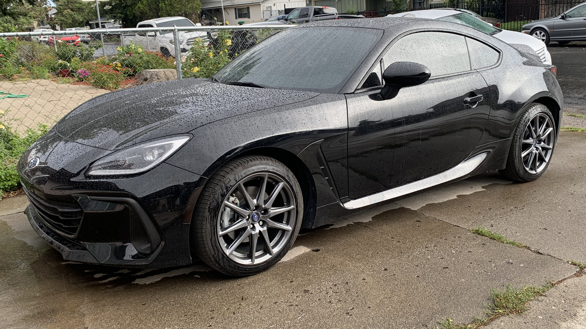
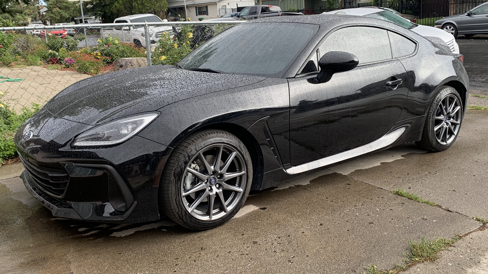

About Me
I'm Zi, a systems engineer with over 3 years of work experience in quality assurance. I earned my B.S. in Software Engineering from Western Governors University in April of 2025.
My passion lies in building software and solutions that helps others and make a meaningful impact. Technology has always fascinated me and this is my way of diving deeper while contributing back to the industry I grew up admiring.
Outside of tech, I also enjoy picking up skills such as wood/metal working, anodizing, and soldering. I'm also a passionate automotive enthusiast. I have owned many different cars and currently have a fixation with Porsche.


 

Projects
Vac Track
Android Studio - Java - Room
Vac Track is an Android app that helps users to manage their vacations and excursions in a streamlined, offline environment. It uses a clean UI, industry standard security features such as input validation, and Room to reduce dependencies.
Vac Track is currently available on Itch.io for free.
-
Features Include:
- Vacation & Excursion Management
- Notifications/Alerts
- Data Sharing Options
- Search/Filter Functionality
- Report Generation